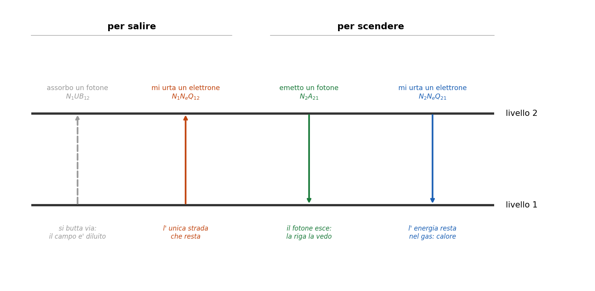
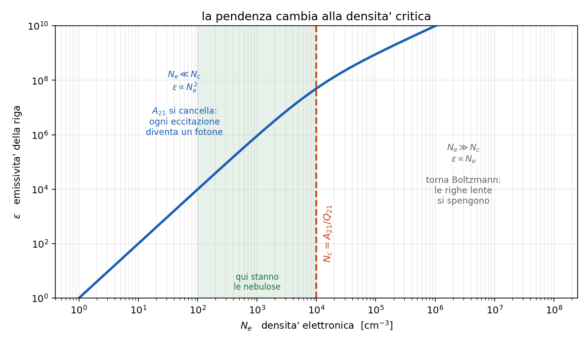

5.1-5.4 - Gas rarefatto: atomo a due livelli, densita' critica, quenching
Dispensa: cap. 5.1-5.4 (pag. 53-63).
Capitolo a mattoncini. Si costruisce un bilancio pezzo per pezzo, e poi lo si legge nei
due casi limite: e' li' che sta tutto il capitolo.
Da qui in poi si cambia mondo: si lascia la fotosfera e si va nelle nebulose. La temperatura e'
quasi la stessa ($\sim 10^4$ K), ma la densita' crolla di dieci ordini di grandezza.
E la prima conseguenza e' pesante: Boltzmann non vale piu'.
Boltzmann descrive un gas in cui le collisioni sono cosi' frequenti da imporre l' equilibrio. In
una nebulosa le collisioni sono rarissime. Quindi le popolazioni dei livelli vanno calcolate a
mano, contando chi sale e chi scende.
Questo capitolo fa esattamente quel conto, nel caso piu' semplice possibile.
1. Il modello
Si prende un atomo (o uno ione: vale per qualsiasi specie, e il caso piu' importante non e'
affatto l' idrogeno) e si finge che abbia due soli livelli: uno basso dove sta di solito, e uno
alto dove puo' salire.
Perche' si puo' fare una semplificazione cosi' brutale?
- perche' semplifica i conti, e questo e' onesto dirlo
- perche' in quelle condizioni e' quasi vero: a $10^4$ K l' energia tipica e' 0.86 eV, quindi
di livelli davvero raggiungibili ce n'e' pochissimi. Gli altri stanno troppo in alto.
In pratica: un livello in cui l' atomo sta, uno in cui puo' salire, e una sola riga che nasce
dalla transizione fra i due.
2. I modi per salire e per scendere
Adesso si contano i processi. Sono quattro in tutto, due che portano su e due che portano giu'.
2.1 Per salire da 1 a 2
Assorbo un fotone di energia esatta $h\nu = E_2 - E_1$: si conta come $N_1 U B_{12}$.
Mi urta un elettrone libero abbastanza energetico, che mi cede energia: si conta come
$N_1 N_e Q_{12}$.
$N_1$ $\quad$ densita' numerica di atomi sul livello 1
$N_e$ $\quad$ densita' numerica di elettroni liberi
$Q_{12}$ $\quad$ rate collisionale di eccitazione, in cm$^3$ s$^{-1}$
$U B_{12}$ $\quad$ rate radiativo, dipende dal campo di radiazione $U$
Da tenere: il termine radiativo $U B_{12}$ si butta via. In una nebulosa
la stella e' lontanissima, il campo di radiazione arrivato li' e' diluito di un fattore
enorme, e i fotoni giusti per quella transizione praticamente non passano. Quindi resta solo il
canale collisionale: in una nebulosa si sale solo per urto.
2.2 Per scendere da 2 a 1
Emetto un fotone: si conta come $N_2 A_{21}$.
Cedo la mia energia a un elettrone che passa (urto di seconda specie, o superelastico): si
conta come $N_2 N_e Q_{21}$.
$A_{21}$ $\quad$ coefficiente di Einstein, probabilita' di decadere spontaneamente al secondo
$Q_{21}$ $\quad$ rate collisionale di diseccitazione
Questa e' la biforcazione centrale di tutto il capitolo, quindi fermiamoci un attimo:
| come scendo | cosa succede all' energia |
|---|---|
| emetto un fotone | esce dalla nebulosa e la vedo |
| mi urta un elettrone | resta nel gas come calore, non la vedo |
Tutto quello che segue e' capire quale dei due vince.

3. L'equazione di equilibrio statistico
Una nebulosa cambia su scale di migliaia di anni, mentre i processi atomici avvengono in frazioni
di secondo. Quindi, sui tempi che ci interessano, la situazione e' stabile: il numero di atomi
che salgono deve pareggiare quello di chi scende.
$$(\text{quelli che salgono}) = (\text{quelli che scendono})$$
$$N_1 N_e Q_{12} = N_2 A_{21} + N_2 N_e Q_{21}$$
Da cui si ricava il rapporto fra le popolazioni:
$$\frac{N_2}{N_1} = \frac{N_e Q_{12}}{A_{21} + N_e Q_{21}}$$
Qui si nota una cosa: questa formula sostituisce Boltzmann. Boltzmann diceva che il
rapporto fra due popolazioni dipende solo dalla temperatura. Qui invece dipende anche dalla
densita', perche' $N_e$ compare sia sopra che sotto e non si semplifica. E' la firma del fatto
che non siamo in equilibrio.
3.1 Come si legge il denominatore
I due termini di sotto sono le due strade per svuotare il livello 2.
$A_{21}$ $\quad$ svuotamento per emissione, e non dipende dalla densita': e' una proprieta'
dell' atomo
$N_e Q_{21}$ $\quad$ svuotamento per urto, e cresce con la densita'
Quale dei due comanda dipende da quanto e' denso il gas. Ed e' l' unica domanda che conta.
4. La densità critica
Domanda naturale, ed e' quella giusta da farsi:
a che densita' i due si pareggiano?
Si impone $A_{21} = N_e Q_{21}$ e si tira fuori quella densita', che si chiama densita' critica:
$$N_c = \frac{A_{21}}{Q_{21}}$$
$N_c$ e' la densita' alla quale un atomo eccitato ha la stessa probabilita' di decadere
emettendo un fotone o di essere spento da un urto.
Ogni transizione di ogni ione ha la sua $N_c$. Non e' un numero universale: dipende da $A_{21}$,
cioe' da quanto quella transizione e' veloce.
5. Primo regime: gas rarefatto ($N_e \ll N_c$)
Qui $N_e Q_{21}$ e' trascurabile davanti ad $A_{21}$, quindi:
$$\frac{N_2}{N_1} = \frac{N_e Q_{12}}{A_{21}}$$
Adesso il passaggio bello. L' emissivita' della riga e' "quanti decadimenti al secondo per
cm$^3$", cioe':
$$\varepsilon \propto N_2 A_{21}$$
Sostituendo $N_2$ trovato sopra:
$$\varepsilon = N_1 N_e Q_{12}$$
$A_{21}$ si è cancellato.
5.1 Cosa vuol dire che $A_{21}$ sparisce
Questo e' il punto piu' importante di tutto il capitolo, quindi lo scrivo lento.
Se il gas e' abbastanza rarefatto, l' intensita' della riga non dipende da quanto quella
transizione e' probabile.
Il motivo, a pensarci, e' ovvio: se l' atomo e' salito su, prima o poi deve scendere, e
l' unico modo che ha e' emettere. Che ci metta $10^{-8}$ secondi o dieci secondi non cambia niente,
perche' tanto in quel tempo non lo disturba nessuno.
A bassa densita', ogni eccitazione diventa un fotone.
E l' emissivita' e' governata solo da quanto spesso si sale, cioe' dagli urti. Siccome
$N_1 \propto N_e$ nel gas:
$$\varepsilon \propto N_e^2$$
Va col quadrato della densita': serve un elettrone per urtare e un atomo da urtare.
6. Secondo regime: gas denso ($N_e \gg N_c$)
Qui succede il contrario: $A_{21}$ e' trascurabile davanti a $N_e Q_{21}$, quindi
$$\frac{N_2}{N_1} = \frac{N_e Q_{12}}{N_e Q_{21}} = \frac{Q_{12}}{Q_{21}}$$
$N_e$ si semplifica, e resta un rapporto fra due coefficienti collisionali.
6.1 Il rapporto $Q_{12}/Q_{21}$
Quel rapporto e' noto, e viene dal bilancio dettagliato: in equilibrio termodinamico ogni
processo e' bilanciato esattamente dal suo inverso, quindi
$$N_1 N_e Q_{12} = N_2 N_e Q_{21} \quad \rightarrow \quad \frac{N_2}{N_1} = \frac{Q_{12}}{Q_{21}}$$
e siccome in equilibrio quel rapporto lo da' Boltzmann:
$$\frac{Q_{12}}{Q_{21}} = \frac{g_2}{g_1} e^{-h\nu / k_B T}$$
Nota: questa relazione si ricava assumendo l' equilibrio, ma poi si usa
anche fuori dall' equilibrio, e non e' una scorrettezza. Il motivo: e' una relazione fra
coefficienti, non fra popolazioni. Dentro non compaiono $N_1$ ne' $N_2$. I coefficienti sono
proprieta' dell' atomo e degli elettroni che lo urtano, e l' unica cosa che serve perche' valga e'
che gli elettroni abbiano una distribuzione di velocita' maxwelliana - cosa che in una nebulosa e'
vera, perche' gli elettroni si termalizzano fra loro molto in fretta.
6.2 Il risultato
Sostituendo in $\varepsilon \propto N_2 A_{21}$:
$$\varepsilon = A_{21} N_1 \frac{g_2}{g_1} e^{-h\nu/k_B T}$$
Siamo tornati a Boltzmann. E stavolta $A_{21}$ c'e', eccome.
Il motivo fisico: a densita' alta il livello 2 non riesce ad accumularsi oltre il valore di
equilibrio, perche' ogni urto che eccita e' pareggiato da uno che diseccita. Quindi quello che
conta e' quanto sei veloce a emettere prima che ti spengano.
E siccome $N_1 \propto N_e$:
$$\varepsilon \propto N_e$$
Va lineare con la densita', non piu' col quadrato.

7. Il quenching
Quello che succede nel regime denso ha un nome: quenching, cioe' spegnimento.
l' atomo viene eccitato per urto, ma prima che faccia in tempo a emettere il fotone arriva un
secondo urto che gli riprende l' energia. Il fotone non viene mai emesso, e l' energia resta nel
gas come calore.
E' esattamente il motivo per cui certe righe si vedono nelle nebulose e non si vedono in
laboratorio: in laboratorio non si riesce a fare il vuoto abbastanza spinto.
8. Il quadro completo
| $N_e \ll N_c$ | $N_e \gg N_c$ | |
|---|---|---|
| chi svuota il livello 2 | l' emissione | gli urti |
| $A_{21}$ nella formula | sparisce | compare |
| chi comanda | quanto spesso si sale | Boltzmann |
| $\varepsilon$ va come | $N_e^2$ | $N_e$ |
| destino dell' energia | esce come fotone | resta come calore |
| le righe lente (proibite) | si vedono | si spengono |
8.1 Perché questo capitolo spiega le righe proibite
Ed ecco a cosa serviva tutto il discorso.
Una riga proibita e' una riga con $A_{21}$ ridicolmente piccolo, tipo $10^{-2}$ s$^{-1}$ contro
i $10^8$ di una riga normale. Guardando la tabella:
- ad alta densita': l' emissivita' dipende da $A_{21}$, che e' minuscolo -> la riga non si vede
- a bassa densita': $A_{21}$ non compare nella formula -> alla riga non gliene importa
niente di essere lenta, e si vede benissimo
E c'e' anche il verso quantitativo: $N_c = A_{21}/Q_{21}$, quindi una riga con $A_{21}$ piccolo ha
$N_c$ bassissima, cioe' basta pochissima densita' per spegnerla.
Se ne parla per bene nel capitolo 5.7.
9. In breve
- nelle nebulose Boltzmann non vale: le popolazioni si contano a mano con l' equilibrio statistico
- si sale solo per urto, perche' il campo di radiazione e' diluito
- si scende in due modi: emettendo (la vedo) o per urto (calore, non la vedo)
- $N_2/N_1 = N_e Q_{12} / (A_{21} + N_e Q_{21})$
- $N_c = A_{21}/Q_{21}$ e' la densita' a cui i due modi di scendere si pareggiano
- $N_e \ll N_c$: $A_{21}$ si cancella, $\varepsilon = N_1 N_e Q_{12} \propto N_e^2$, ogni
eccitazione diventa un fotone - $N_e \gg N_c$: torna Boltzmann, $\varepsilon \propto N_e$, le righe lente si spengono
(quenching) - $Q_{12}/Q_{21} = (g_2/g_1) e^{-h\nu/k_BT}$, dal bilancio dettagliato, e vale anche fuori
equilibrio perche' lega coefficienti e non popolazioni
Domande tattiche
1. In una nebulosa, un atomo puo' salire di livello in due modi. Perche' se ne butta via uno?
(-> sezione 2.1)
2. A bassa densita' l' emissivita' della riga non dipende da $A_{21}$. Spiega perche' con una
frase che parli dell' atomo, senza usare la formula. (-> sezione 5.1)
3. La relazione $Q_{12}/Q_{21} = (g_2/g_1)e^{-h
u/k_BT}$ si ricava assumendo l' equilibrio, ma
poi la usiamo fuori dall' equilibrio. Perche' non e' una scorrettezza? (-> sezione 6.1)
4. Ti danno due nebulose identiche tranne che per la densita': una a $10^2$ e una a $10^7$
cm$^{-3}$. In quale vedi la riga proibita, e di quanto cresce l' emissivita' se raddoppi la
densita' in ciascuna? (-> sezioni 5.1, 6.2 e 8)
5. Nel regime denso ritrovi Boltzmann. Non e' strano, visto che eravamo partiti dicendo che in
nebulosa Boltzmann non vale? Sistema la contraddizione. (-> sezione 6.2)
6. Una riga ha $N_c = 10^6$ cm$^{-3}$ e un' altra $N_c = 10^2$. Quale delle due ha
l' $A_{21}$ piu' grande, e come lo sai? (-> sezione 4)